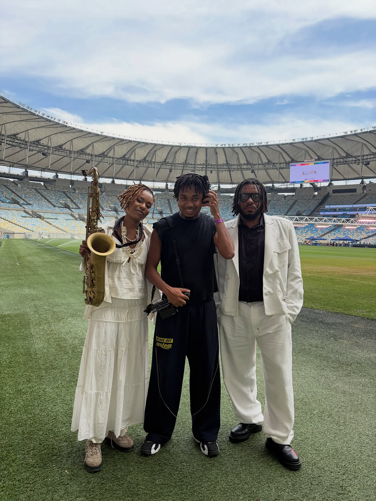
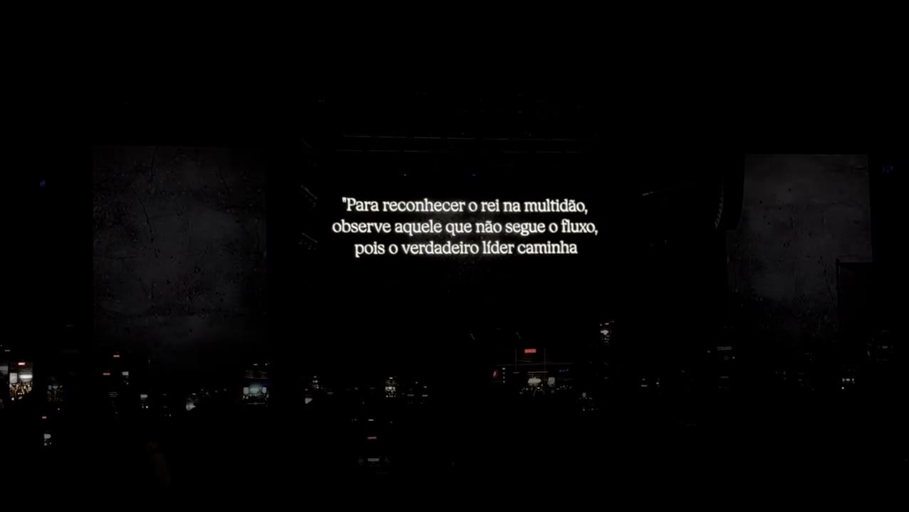
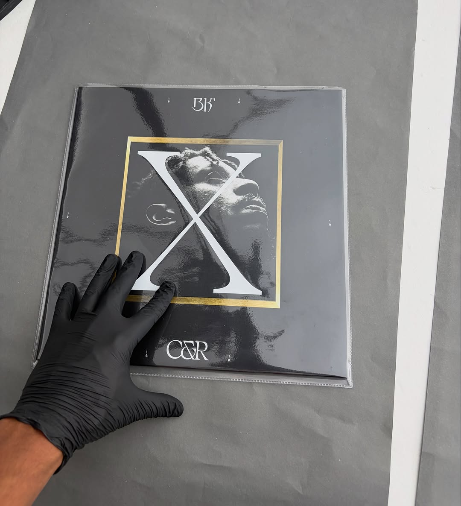
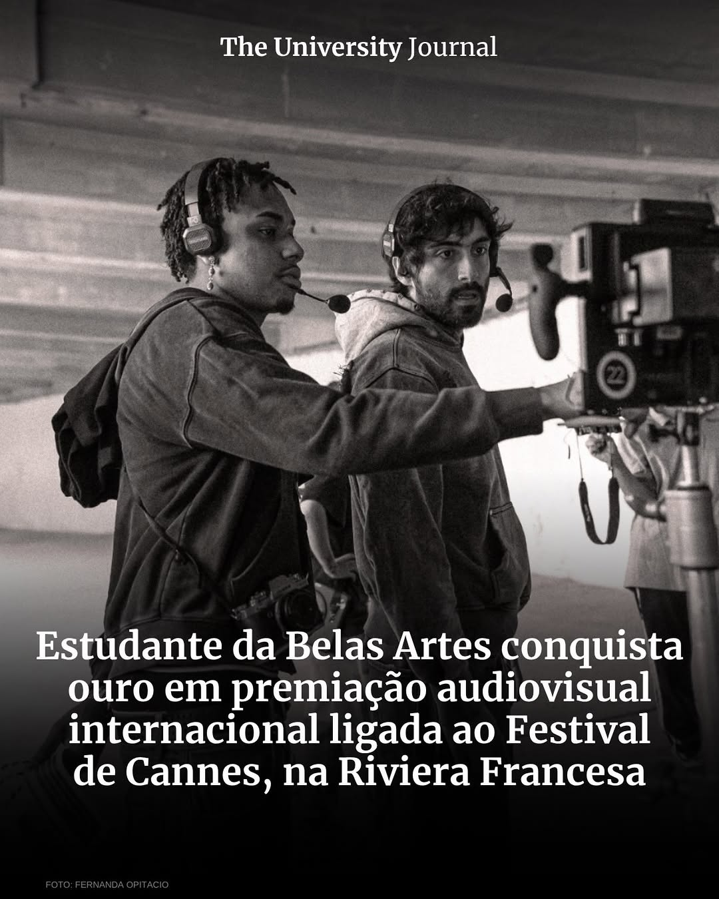

Ouro
Young Director Award
Cannes · 2026
Premiação internacional de novos diretores, realizada durante o Festival de Cannes.
um ensaio visual de poeta visual & willy hajli
Castelos & Ruínas
BK' · 10 anos · "Caminhos"
Fotógrafo e diretor. Codireção do filme dos 10 anos de Castelos & Ruínas, do BK'.
não é só a história do Abebe
role ↓ato i · a dualidade
O filme é construído em duas metades. O Castelo é o feminino: abrigo, proteção, a mãe que fala com o filho. A Ruína é a luta: os combatentes e os desafios do caminho. Arraste a linha.
ato ii · o filme
Um ensaio visual sobre a faixa "Caminhos" que abriu as comemorações de 10 anos do álbum. Sem narrativa convencional: fragmentos, ancestralidade e cosmologia num retrato metafórico de Abebe Bikila.
"não é só a história do Abebe, é uma história que também fala sobre mim"
Poeta Visual, à Billboard Brasil


ato iii · os louros
Cannes · 2026
Premiação internacional de novos diretores, realizada durante o Festival de Cannes.
27ª edição · 2026
Melhor Vídeo Musical Versão Curta: 10 anos de Castelos & Ruínas, BK'.
ato iv · monumental
Do Maracanã ao Nubank Parque, em 19.09: o filme virou telão, e a câmera seguiu a turnê.
arraste / role →



"Monumental, 10 anos de Castelos & Ruínas."
ver no instagram ↗ato v · quem filma
23 anos, estudante de Fotografia na Belas Artes de São Paulo. Um trabalho que transita entre fotografia, moda, rap e audiovisual, com referências na cultura urbana, na ancestralidade e na juventude negra brasileira.

"Mostra que é possível transformar nossas referências em uma linguagem capaz de chegar a outros lugares."
ao The University Journal
fim · próximo filme